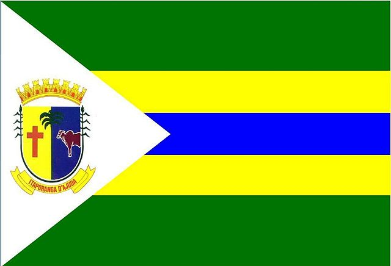

Itaporanga D’Ajuda
História
O município de Itaporanga D’Ajuda se ergue em terras que eram dominadas pelo chefe indígena Surubi. O núcleo demográfico, à margem direita do rio Vasa Barris, teve sua origem na segunda metade do século XVI. Em 1575, Gaspar Lourenço, padre da Companhia de Jesus, fundou aldeia de catequese e edificou a igreja de Santo Inácio mais próxima do mar. A desconfiança indígena, gerada pela ganância dos colonizadores, interrompeu, até 1590, a conquista da terra, que se vinha processando pacificamente. Longo foi o período de lutas entre portugueses e indígenas, perdurando, inclusive, durante a ocupação holandesa.
Os índios que habitavam essas terras pertenciam ao grupo Tupi e chamavam-se abaüs tupinambás, ou simplesmente tupinambás. Todavia, essa povoação fundada pelo padre Gaspar Lourenço não vai dar origem ao município de Itaporanga. A povoação irá terminar um ano após sua edificação devido a uma Guerra Justa que travada entre os índios de Itaporanga e os portugueses. Entretanto, mesmo terminando a povoação, as terras de Itaporanga continuaram habitadas por portugueses, mesmo não havendo conquista ou colonização das terras.
O local onde se desenvolveram o combate, durante muito tempo causou divergência entre historiadores e curiosos, até que Sebrão Sobrinho, notável historiador sergipano do século XX, acabou com o mistério, revelando que esse combate, bem como a continuação da povoação, ocorreu na região que na época denominava-se Santo Antônio dos Campos do Tejupeba, que hoje corresponde às áreas dos povoados Tejupeba e vizinhança. A versão de Sebrão Sobrinho é a mais aceita atualmente e fora bastante divulgada através do livro Memórias de Itaporanga, do escritor itaporanguense Robson Mistersilva.
fonte: https://itaporanga.se.gov.br/historia-do-municipio/Pontos Turísticos
Ilha de Mem de Sá
Maior fenômeno atual da indústria do turismo no estado de Sergipe, a Ilha de Mem de Sá é tudo aquilo que dizem e muito, mas muito mais mesmo. É um verdadeiro paraíso dos trópicos, um lugar completamente diferenciado, ímpar, único. Sua imensa extensão preservada com mata atlântica e apicuns é um convite para um encantamento, para a contemplação. Suas prainhas se estendem por toda a sua área, propiciando diversos pontos para um delicioso banho nas águas do rio Vaza Barris.
Hoje a ilha de Mem de Sá já é matéria de estudo de diversas turmas da Universidade Federal de Sergipe – UFS, principalmente de ambientalistas que estão em constante plantão, na luta pela preservação dessa pérola da nossa fauna e flora, que ainda está praticamente intacta, graças ao trabalho da Prefeitura Municipal De Itaporanga D´Ajuda, Procuradores Federais e a Associação de Moradores local que se deram as mãos para manter a preservação desse pequeno paraíso, observando o crescimento sustentável e o controle de sua exploração apenas pelos próprios nativos.
Dados Gerais de acordo com o IBGE
| Prefeito (a) | Otávio Silveira Sobral |
| Vice-Prefeito (a) | José Humberto Costa Silveira |
| Site do município | https://itaporanga.se.gov.br/ |
| Área territorial | 739,702 km² |
| População estimada | 35.054 pessoas |
| Densidade demográfica | 41,11 hab/km² |
| IDHM | 0,561 |
| PIB per capita | R$ 24.965,16 |